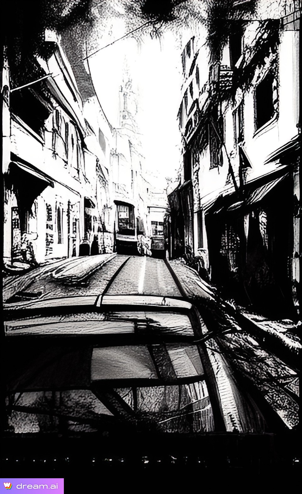
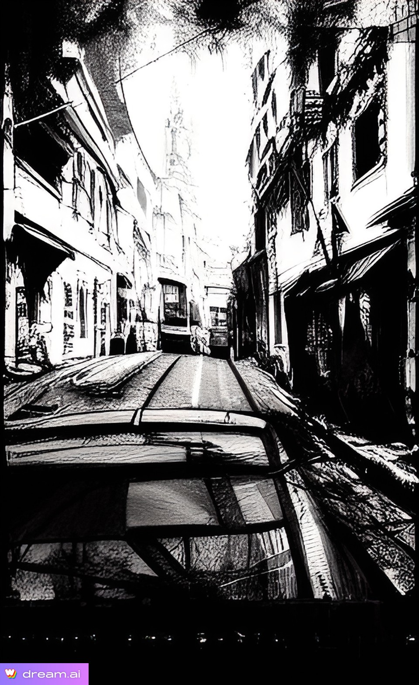

How I started
I wanted something more in my life so I took action. I started looking at coding
and decided to try something I have never done and jump into the world of coding. I do admit
it has been hard at times and I have been challenged to overcome obstacles, but it feels good.
I may not be the best, but I am learning and growing every day.
Hello, my name is Curtis. I am 36 years old and just started learning how to code after not finding a job I can relate to and working jobs I didn't enjoy doing. I started my coding journey in late February of 2023.
Projects with Dream making Ai Generated art


 
